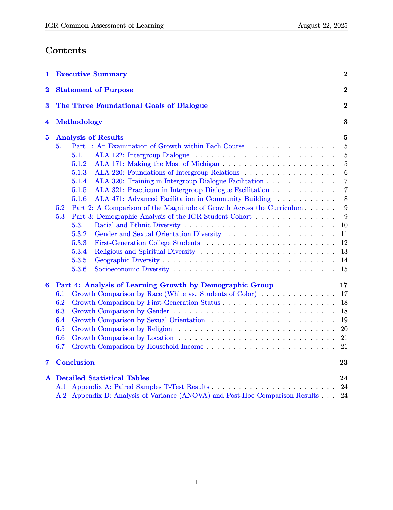
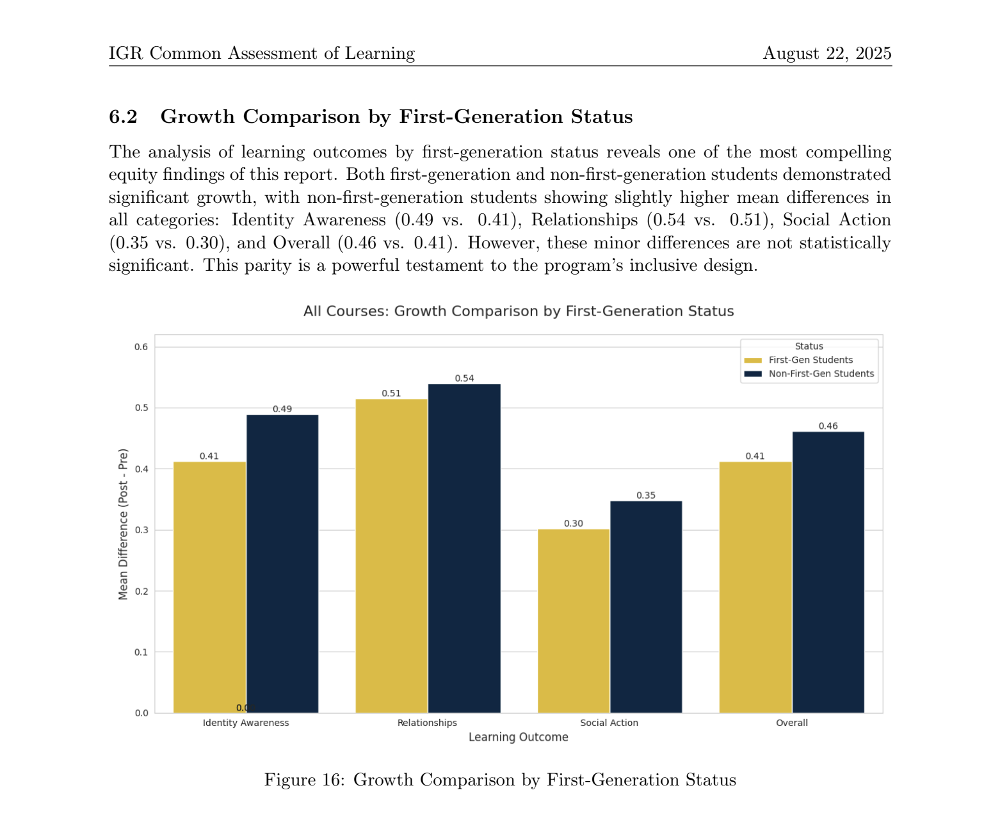
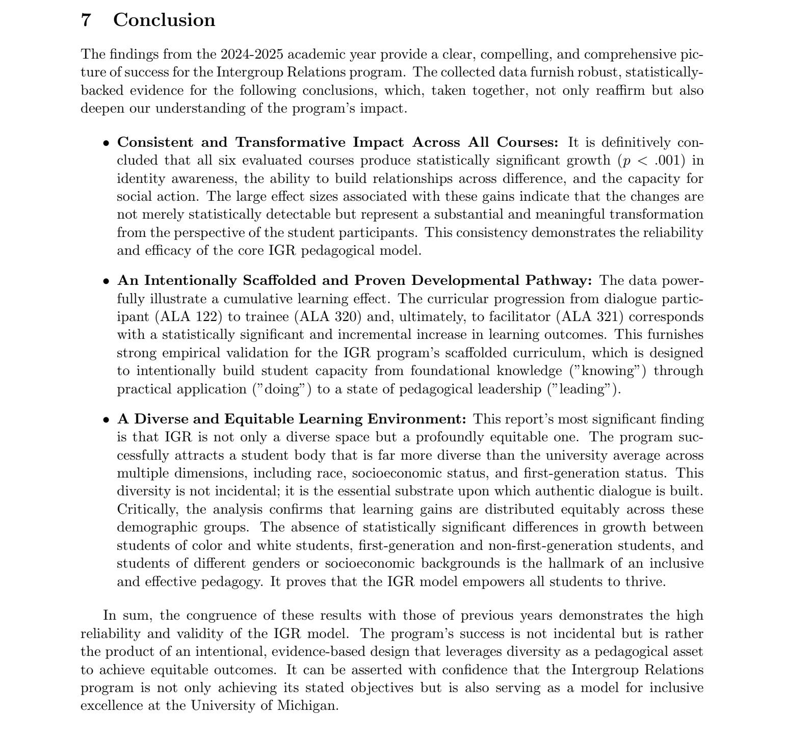
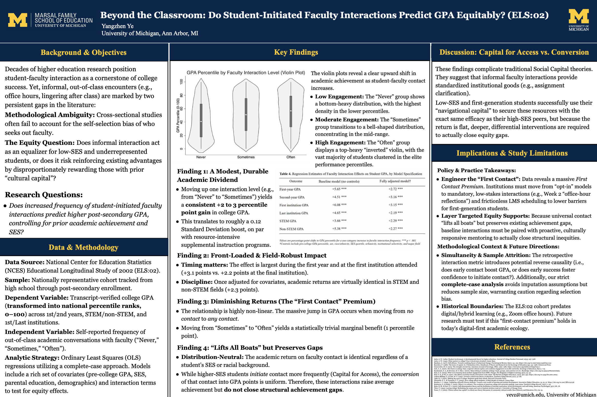
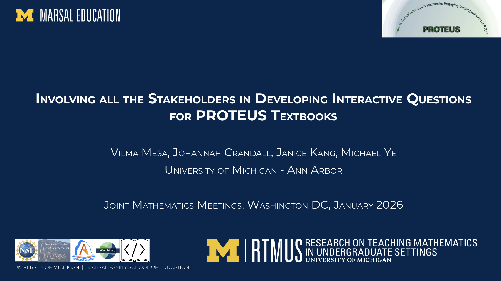
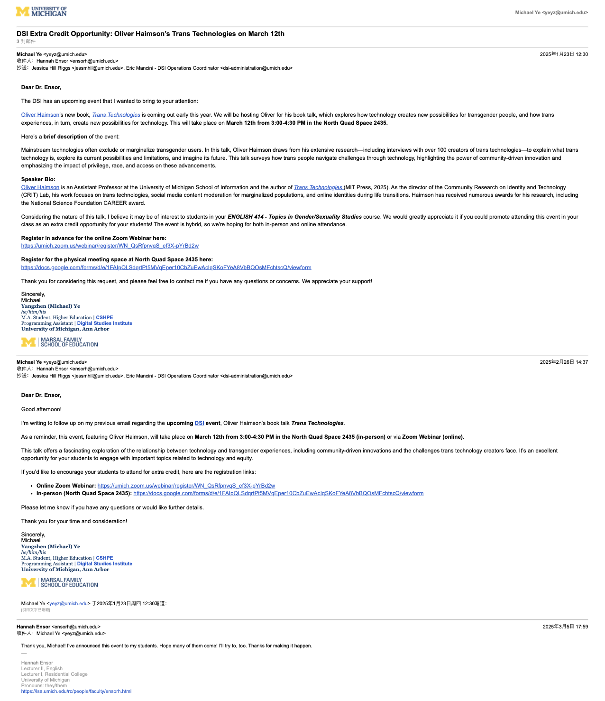
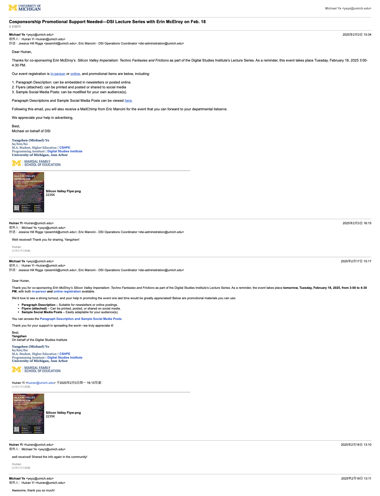
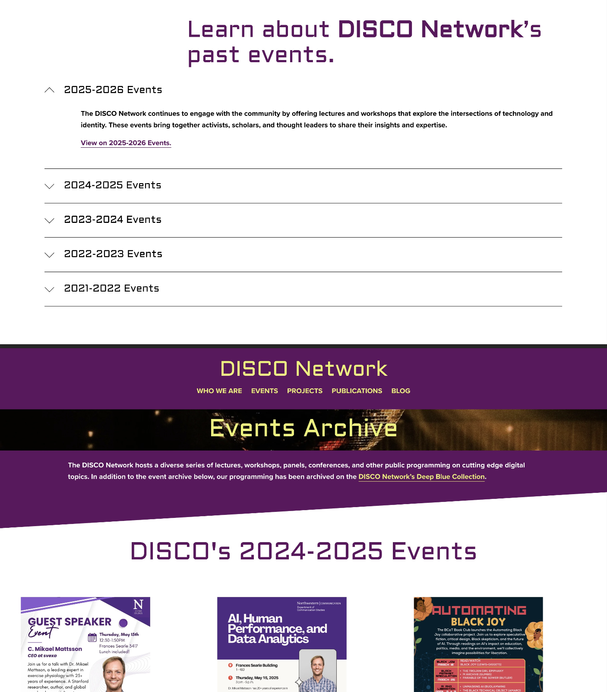
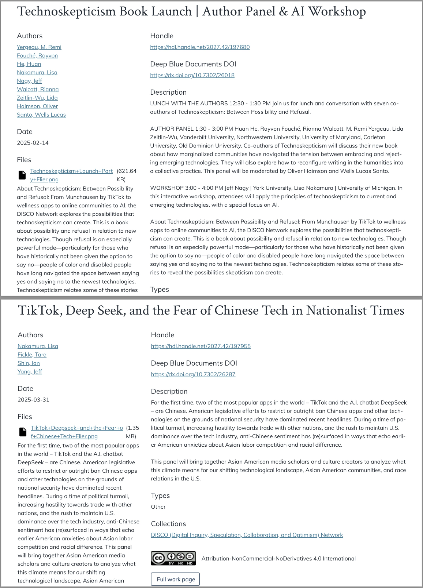

Institutional Reports
Equity-focused research and assessment reports produced for institutional leadership and external stakeholders.
IGR Common Assessment of Learning Report, 2024–25
Print


Designed and executed a comprehensive equity-focused evaluation of the 2024–25 Common Assessment of Learning program. The report examined student outcomes across identity subgroups with attention to access, bias interruption, and institutional support. Recognized by senior staff as "one of the best reports in years," with recommendations formally adopted into IGR's annual reporting cycle.
Presentations & Posters
Conference presentations and visual materials designed for academic and professional audiences.
AEFP 2026 Conference Poster
Print + Digital
Designed and presented a research poster on student–faculty interaction patterns and GPA outcomes using the ELS:2002 dataset. The poster communicated complex regression findings to a mixed audience of researchers, policymakers, and practitioners.
JMM 2026 Invited Talk: Stakeholder Engagement in Interactive Textbook Design
Digital
Co-authored an invited talk on involving stakeholders in the development of interactive questions for PROTEUS textbooks. Contributed to stakeholder engagement design and data collection. Presented by Dr. Vilma Mesa at the SIGMAA on RUME Special Session.
RUME 2026: Student Agency in Collaborative Textbook Development
DigitalCo-authored a peer-reviewed paper on student agency in the collaborative development of novel interactive textbook questions in calculus and linear algebra. Contributed to transcript analysis and interpretation of agency-related findings. Presented by Dr. Johannah Crandall.
Outreach & Event Materials
Promotional and informational materials created for events, programs, and student-facing communications.
DSI / DISCO Network Event Materials
Print + Digital

Led faculty outreach for DSI and DISCO Network events, drafting and sending personalized emails to professors across departments to promote lectures, book talks, and co-sponsored programming. Managed initial outreach, follow-up communications, and coordination with co-sponsors, providing ready-to-use promotional materials including paragraph descriptions, flyers, and sample social media posts.
Digital & Web Content
Web content, documentation, and digital communications produced for institutional audiences.
DISCO Network Digital Records & Documentation
Digital

Maintained and updated public-facing digital records and documentation infrastructure for the DISCO Network, ensuring long-term accessibility and usability of program materials for current and future stakeholders.
About Me
I am a higher education professional whose academic path has spanned institutions in mainland China, Taiwan, and the United States. My work centers on student access, equity-focused assessment, and the kinds of institutional support that help students—especially those navigating unfamiliar systems—find their footing and thrive.
Education
M.A. in Higher Education, University of Michigan
B.A. in Management & Education, Soochow University
Exchange: University of Taipei
Languages
English (professional fluency)
Mandarin Chinese (native)
Traditional Chinese (native level)
Research Interests
Student–faculty interaction, access and equity in higher education, first-generation student engagement
Contact
yeyz@umich.edu
Ann Arbor, MI